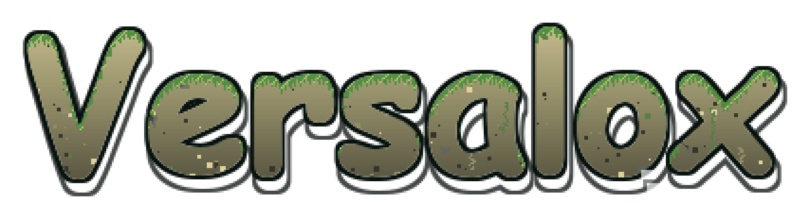
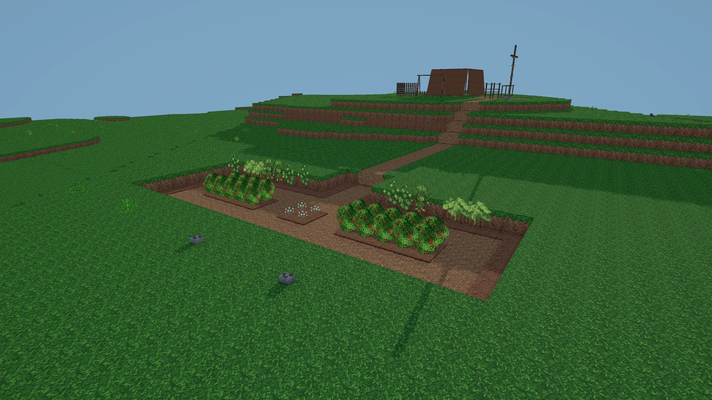
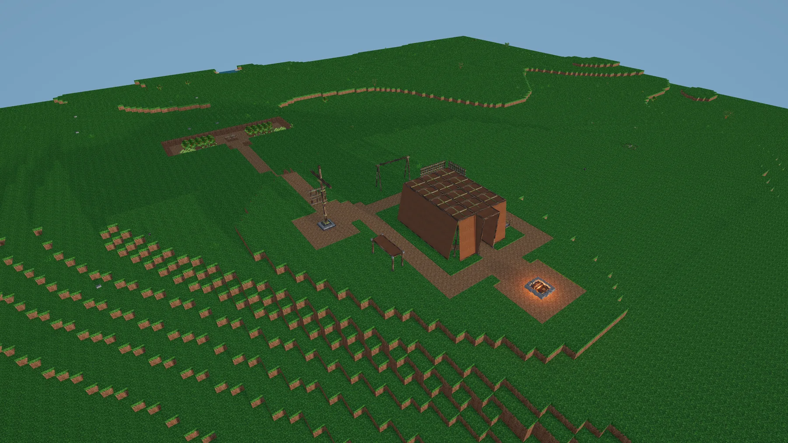
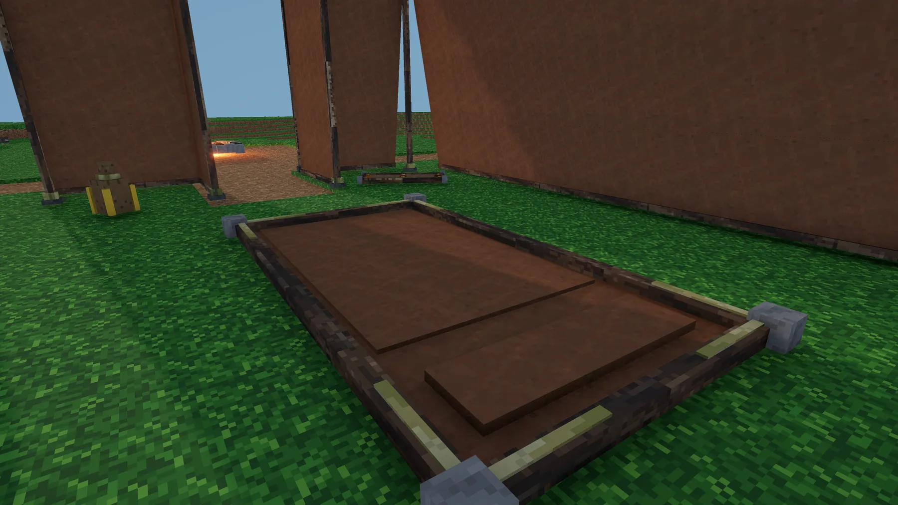
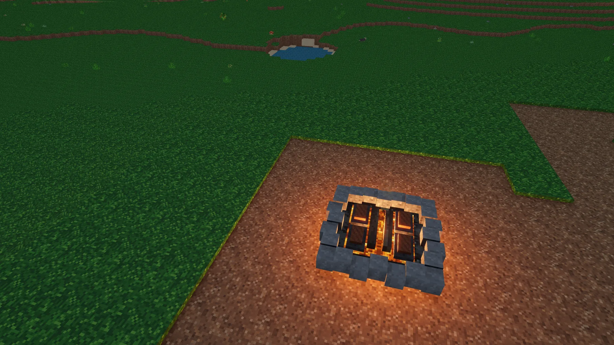

Survive the wild
Manage hunger, thirst, stamina and fatigue while learning what the world can provide.
Current focus · Solo-developed

A voxel survival crafting game about turning a fragile camp into a growing civilization — one discovery, structure and era at a time.
Prototype 0.0.2 · Era 2 in active developmentVersalox
Begin with empty hands in a procedural voxel world. Gather, craft and survive — then turn what you learn into tools, production chains, buildings and a place that can endure.
Manage hunger, thirst, stamina and fatigue while learning what the world can provide.
Create tools, shelters, stations and storage that transform survival into a lasting home.
Follow quests, unlock knowledge and move from primitive craft toward increasingly complex systems.
Explore a generated hybrid-voxel landscape, shape terrain and leave a settlement behind.
Versalox material system
Era 2 introduces a native material inventory. Materials keep their identity and base amount while the interface groups them into readable portions.
Each step is five times larger
In the current volume model, 1 Versi equals 0.125 m³. The Material Station converts Dirt, FiredClay and PackedClay between all five portions without loss.

Coming in Prototype 0.0.2
The next public version expands the primitive survival loop into production, material handling and settlement planning.
In-game
Development images from the current playable prototype.



Games & experiments
Versalox is the active main project. Earlier playable prototypes remain available as milestones in the journey.
About Versaliate
Versaliate is an independent game label focused on systems-driven worlds, meaningful progression and playable iteration. Each public prototype is a real step forward — and an invitation to follow the development.
Visit Versaliate on itch.ioVERSALOX · WEB CODEX
Knowledge from the currently playable eras.